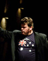

Richard McIntyre, OAM
Richard McIntyre, OAM, BMus (University of Sydney) has maintained a long and distinguished career as bassoonist, music educator, conductor and arranger.
Read more...
David Lawrence
An inspirational, energetic, dynamic conductor with a wealth of knowledge covering many and varied kinds of choral music. .
Read more...

Sean O'Boyle AM
Awarded the Order of Australia in 2015, Sean O'Boyle AM is a New York/Bethlehem based Australian composer/conductor, who splits his time between the USA and his native land of Australia.
Read more...
Mario Dobernig
Mario Dobernig is Conductor in Chief and Artistic Director for the Art of Sound Orchestra, Preston Symphony Orchestra, Victoria Chorale, the Ballarat Wind Orchestra and the Artistic Director of the highly successful Whitley College Music Festival Series.
Read more...
Mark Shiell
Currently Mark serves as Artistic Director and Principal Conductor of Zelman Symphony Orchestra, the Ballarat Symphony and the Macquarie Philharmonia.
Read more...
Raymond Yong
The name “James Morrison” is known throughout the world for his sheer brilliance as a jazz musician and an all round entertainer.
“Man, James Morrison can play!”
Read more...